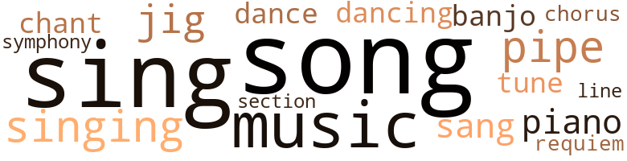
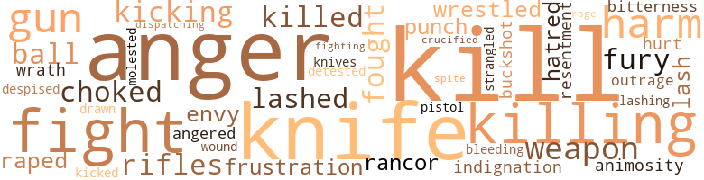
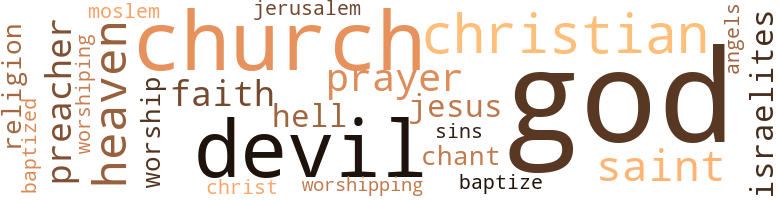

Slaves, by Killens, John Oliver (1969)
58 music-related terms matched in this text.
Most frequent terms in this topic: song (8); sing (7); singing (5); pipe (5); music (5)
banjo.n.01
Definition: a stringed instrument of the guitar family that has long neck and circular body
| word | sentence |
|---|---|
| banjo | Where the hell is that banjo player ? |
| banjo | Picked up his banjo and began to beat out a lively tune . |
chant.n.01
Definition: a repetitive song in which as many syllables as necessary are assigned to a single tone
| word | sentence |
|---|---|
| chant | She , humming an African chant . |
| chant | The hawker was aiming his chant now with religious fervor at a very handsome , elegant lady , of obvious high breeding , thirty-five , give or take , a year or so , ( It was hard to tell about real quality-type ladies ) , and her daughter of sixteen summers . |
chorus.n.01
Definition: any utterance produced simultaneously by a group
| word | sentence |
|---|---|
| chorus | A chorus of giggling locusts , crazy crickets , honking frogs and a host of other musicians in the nighttime orchestra . |
dance.n.01
Definition: an artistic form of nonverbal communication
| word | sentence |
|---|---|
| dance | In the back of the room , a couple of women were doing a dance , just to show how happy they were and how good were all the kindly masters , but most of the women were matter-of-factly changing clothes , grimly , glumly , ( there were some sad ones too ) , in varying stages of undress , a couple as naked as they came into the world . |
dance.v.02
Definition: move in a pattern; usually to musical accompaniment; do or perform a dance
| word | sentence |
|---|---|
| dancing | She applied oil to her neck and shoulders , humming all the time ( black and comely - black and comely ) , and she picked up the mask and held it before her and she stood up and started to move rhythmically , from side to side , like she was dancing with the mask as a partner . |
dance.v.03
Definition: skip, leap, or move up and down or sideways
| word | sentence |
|---|---|
| dance | in the afternoon , when the good black sweet earth began to dance beneath his feet . |
| dancing | Jericho stopped dancing the jig , and Luke was trying to give him a sign to take a swallow of the rum and not to make a fight over it , but Mackay saw Jericho looking around as if for instructions . |
jig.n.01
Definition: music in three-four time for dancing a jig
| word | sentence |
|---|---|
| jig | Charley leaped up from the floor and he and Shadrach began to do a lively jig . |
| jig | " You want me to do a little dancing jig for the gennermans , Massa ? " |
| jig | Jericho skinned back his jaws from ear to ear and gave Mackay one of those " yassah-massa " grins , and went into the wildest jig that anybody had ever seen . |
| jig | Jericho stopped dancing the jig , and Luke was trying to give him a sign to take a swallow of the rum and not to make a fight over it , but Mackay saw Jericho looking around as if for instructions . |
music.n.01
Definition: an artistic form of auditory communication incorporating instrumental or vocal tones in a structured and continuous manner
| word | sentence |
|---|---|
| music | Mixed with the music of the locusts , frogs and crickets , were the sounds of tired groaning slaves . |
| music | Evaline came down the stairs , and started into the living room , as if drawn there by the music . |
| music | I feel like that music . |
| music | His mind conjured up great music from a far-off place and a distant time . |
| music | Softly , sweetly , to organ music . |
piano.n.01
Definition: a keyboard instrument that is played by depressing keys that cause hammers to strike tuned strings and produce sounds
| word | sentence |
|---|---|
| piano | When Cassy walked into the living room , Mackay was seated at the piano and began to play the Lacrimae Movement from Mozart 's Requiem . |
| piano | He was pretty good at the piano , and when he played he somehow seemed another person . |
| piano | Mackay got up from the piano , agitated , angry , mean . |
pipe.n.04
Definition: a tubular wind instrument
| word | sentence |
|---|---|
| pipe | Althea Bennett 's husband was a mild-mannered gentleman , friendly-faced , with a pipe forever stuck in the middle of it , pufling away complacently . |
| pipe | Bennett pulled complacently on his fancy pipe . |
| pipe | He was a pipe fancier . |
| pipe | Bennett puffed his pipe and answered patiently , " Gentlemen , we are more than cotton , more than power . |
| pipe | He puffed his pipe so peacefully , as if he might fall asleep standing up . |
requiem.n.02
Definition: a musical setting for a Mass celebrating the dead
| word | sentence |
|---|---|
| requiem | Feels like a love song instead of a requiem . |
section.n.01
Definition: a self-contained part of a larger composition (written or musical)
| word | sentence |
|---|---|
| section | It stood there away from the others , its naked limbs outstretched like ghostly arms , its middle section burned-out and grotesque . |
sing.v.02
Definition: produce tones with the voice
| word | sentence |
|---|---|
| sing | He could still hear Shadrach sing his " wake-up " song somewhere way off in the distance , and he remembered a song his brothers and sisters used to sing back at the Stillwell place , a million years ago . |
| sing | He could still hear Shadrach sing his " wake-up " song somewhere way off in the distance , and he remembered a song his brothers and sisters used to sing back at the Stillwell place , a million years ago . |
| sing | Then , as if it were the most ordinary occasion , she began to sing , softly : Oh , Mary , doncha weep , doncha moan Oh , Mary , doncha weep , doncha moan . |
| sing | When death freed one of his brothers and sisters in Kentuck , they used to sing the words for the departed they knew that he would sing , if he could sing . |
| sing | When death freed one of his brothers and sisters in Kentuck , they used to sing the words for the departed they knew that he would sing , if he could sing . |
| sing | When death freed one of his brothers and sisters in Kentuck , they used to sing the words for the departed they knew that he would sing , if he could sing . |
| singing | They were singing When the Stars Began to Fall . |
| sing | One of the sisters started to sing in a full-throated packed-with-emotion voice . |
| sang | She sang . |
| sang | He could still hear the singing from his cabin , which had changed now to a song that they always sang on New Years Eve . |
| sang | Just now ! " the hawker sang with gusto . |
| Sing | Sing , dance , obedient , I happy , chop cotton , contented , sew , cook , count up to ten - forward and backwards . |
singing.n.01
Definition: the act of singing vocal music
| word | sentence |
|---|---|
| singing | Pharaoh 's army got drownded Oh , Mary , doncha weep - She stopped singing , and without looking at Mackay , she said , " Get your clothes off , Massa , cause I 'm aims to find out what kinda mail you is tonight . " |
| singing | And the other brothers and sisters joined in the singing . |
| singing | He could still hear the singing from his cabin , which had changed now to a song that they always sang on New Years Eve . |
| singing | He heard singing from the church inside . |
song.n.01
Definition: a short musical composition with words
| word | sentence |
|---|---|
| Songs | " By God , you must have been molded and given tongue right out of the Songs of Solomon . " |
| song | He dropped the bucket in front of the entrance and went into his song again . |
| song | He could still hear Shadrach sing his " wake-up " song somewhere way off in the distance , and he remembered a song his brothers and sisters used to sing back at the Stillwell place , a million years ago . |
| song | He could still hear Shadrach sing his " wake-up " song somewhere way off in the distance , and he remembered a song his brothers and sisters used to sing back at the Stillwell place , a million years ago . |
| songs | It was one of his favorite songs . |
| song | Feels like a love song instead of a requiem . |
| song | The love song of death ! " |
| song | He could still hear the singing from his cabin , which had changed now to a song that they always sang on New Years Eve . |
| song | It was a sad song and brought tears of anguish to his eyes . |
| song | Suddenly Jericho broke the silence with a song . |
symphony.n.01
Definition: a long and complex sonata for symphony orchestra
| word | sentence |
|---|---|
| symphony | Frogs and crickets sounded off in a crazy nighttime symphony , that sounded cacophonic if you did n't listen carefully . |
tune.n.01
Definition: a succession of notes forming a distinctive sequence
| word | sentence |
|---|---|
| tune | The tune had come now , and he took the baby in his lap and kissed her , put her down again . |
| tune | Picked up his banjo and began to beat out a lively tune . |
| Line | Line up and look pretty . |
131 violence-related terms matched in this text.
Most frequent terms in this topic: kill (13); anger (13); knife (11); Kill (6); fight (5)
anger.n.01
Definition: a strong emotion; a feeling that is oriented toward some real or supposed grievance
| word | sentence |
|---|---|
| anger | She turned and faced her master , and they stared their anger at each other . |
| anger | Luke 's face glowed with anger and with triumph . |
| anger | He rubbed his arm , his anger and his great desire , clashing , merging . |
| anger | More anger in his face than terror . |
| anger | A great anger filled Luke 's face now . |
| anger | His dark eyes now aglow with sweet and peaceful anger . |
| anger | Faces filling now with helpless anger . |
| anger | Luke was speechless for a moment , his face filled up with disbelief and anger . |
| anger | Never before was there so much anguish in her face , so much anger in her voice . |
| anger | His face became a mask of anguish , even anger . |
| anger | Stillwell looked for a moment into the anger in Luke 's face , looked away , then back again . |
| anger | I insisted - " Luke stared at Stillwell , absolutely speechless now in his profound rage , his righteous anger , at the betrayal and at this now effort to crown himself with " kindly master " glory . |
| anger | In his anger , Luke grabbed Jericho by the shoulders , shaking him . |
anger.v.02
Definition: become angry
| word | sentence |
|---|---|
| angered | Luke 's profound affrontery amused Mackay almost as much as it angered him . |
animosity.n.01
Definition: a feeling of ill will arousing active hostility
| word | sentence |
|---|---|
| animosity | Shadrach and Charley stared at Luke with a heartfelt animosity . |
bird_shot.n.01
Definition: small lead shot for shotgun shells
| word | sentence |
|---|---|
| buckshot | Kill two rabbits with one buckshot . |
bleeding.n.01
Definition: the flow of blood from a ruptured blood vessel
| word | sentence |
|---|---|
| bleeding | Their heads were bloody now like two wild bleeding pigs , and they were running swiftly out of steam . |
contemn.v.01
Definition: look down on with disdain
| word | sentence |
|---|---|
| despised | She saw Luke in the mirror staring over the woman 's shoulders , and felt him everywhere in the room , and she despised the woman in the mirror . |
crucify.v.01
Definition: kill by nailing onto a cross
| word | sentence |
|---|---|
| crucified | In the carriage , she began to weep , like Mary when they crucified her boychild . |
draw.v.23
Definition: pull (a person) apart with four horses tied to his extremities, so as to execute him
| word | sentence |
|---|---|
| drawn | Most of them were afraid of Luke at the same time they were drawn toward him in a kind of worshipful fascination . |
envy.n.01
Definition: a feeling of grudging admiration and desire to have something that is possessed by another
| word | sentence |
|---|---|
| envy | " You get envy ! |
| envy | I declare , I 'm almost filled with envy . |
fight.n.05
Definition: a boxing or wrestling match
| word | sentence |
|---|---|
| fight | " I maintain , if we do n't win this fight to push slavery into the new states , we 'll be completely forgotten inside of ten years . |
| fight | We 've got to help them win that fight . " |
| fight | Jericho stopped dancing the jig , and Luke was trying to give him a sign to take a swallow of the rum and not to make a fight over it , but Mackay saw Jericho looking around as if for instructions . |
fight.v.02
Definition: fight against or resist strongly
| word | sentence |
|---|---|
| fought | It had been so long since she 'd felt the mother instinct , and the whole thing built inside of her even as she fought the feeling , she , the one , sophisticated , hard beyond the telling of it , she , the one always in control , cold , unfeeling and unapproachable . |
| fight | She , the self-sufficient one , could not fight it any longer . |
| fought | They scrambled for position now , each with a chair in his hand again , They fought like this for at least a half an hour , with Mackay exhorting them on . |
| fight | She tried to fight against the hope this man inspired in her . |
| Fight | " Fight that Battle for Jericho and make these walls come tumblin down ! " |
| fought | He fought to keep his body firm . |
| fighting | He stood there for a moment , fighting back the tears . |
frustration.n.03
Definition: a feeling of annoyance at being hindered or criticized
| word | sentence |
|---|---|
| frustration | She was the picture of frustration . |
| frustration | They stood there face to face , Cassy and Evaline , helpless in their great frustration . |
fury.n.01
Definition: a feeling of intense anger
| word | sentence |
|---|---|
| fury | Shepherd easily whipped himself into a fury on this question . |
| fury | Mackay 's fury reached its limit . |
| fury | Mackay lashed down at Luke 's helpless body again and again and again with a wild and savage fury . |
| rage | I insisted - " Luke stared at Stillwell , absolutely speechless now in his profound rage , his righteous anger , at the betrayal and at this now effort to crown himself with " kindly master " glory . |
gag.v.06
Definition: cause to retch or choke
| word | sentence |
|---|---|
| choked | The holds were always choked with blacks . |
| choked | Holland choked on his cigar . |
| choked | She said , " I just ca n't believe - " Her voice choked oil . |
gun.n.01
Definition: a weapon that discharges a missile at high velocity (especially from a metal tube or barrel)
| word | sentence |
|---|---|
| gun | " Luke , let 's see if we can make Mr. Holland understand the enlightened master-servant relationship , a relationship based alas , not on the chain and gun and whip , but on mutual trust between the master and his trusted slave . " |
| guns | The paddyrollers with their rifles at the ready , the masters with their guns on tap . |
| guns | He saw six paddyrollers on horseback , their guns very much in evidence and at the nervous ready . |
| guns | The slaves were changing into trousers and shirts , old but cleanly washed for the occasion , under the watchful eyes of several white men of the paddyroller type , their guns always in evidence . |
harm.v.01
Definition: cause or do harm to
| word | sentence |
|---|---|
| harm | He , Luke , who would n't harm a mosquito if he were biting him , had taken whiskey from the Big House . |
| harm | And you ca n't scare me - you ca n't harm me ! |
hate.n.01
Definition: the emotion of intense dislike; a feeling of dislike so strong that it demands action
| word | sentence |
|---|---|
| hatred | Cassy 's eyes were alive with raging hatred . |
| hatred | He said , almost in a whisper , " It can be hatred as long as it 's lively for a change . " |
hate.v.01
Definition: dislike intensely; feel antipathy or aversion towards
| word | sentence |
|---|---|
| detested | A true civilization wants calm , holds justice in profound esteem , aristocracy , peace , contentment - " Shepherd detested Bennett 's smugness . |
indignation.n.01
Definition: a feeling of righteous anger
| word | sentence |
|---|---|
| indignation | The young gentleman answered , with indignation , " I 'm from Williams College , sir ! " |
| outrage | In his outrage , he had forgotten his own pain , had lost track of his own agony . |
injury.n.01
Definition: any physical damage to the body caused by violence or accident or fracture etc.
| word | sentence |
|---|---|
| harm | If Luke did n't have sense enough to take care of himself , then - " Old Luke do n't mean no harm , Massa . |
| harm | Ai n't nobody going to do you no harm . " |
kick_back.v.02
Definition: spring back, as from a forceful thrust
| word | sentence |
|---|---|
| kicking | A young man rode up and pulled his horse to a skidding stop , kicking up the black Mississippi earth . |
| kicked | Charley fell to the floor and kicked up his heels . |
| kicking | Luther sat beside him , as Jericho lashed the horses viciously , and they took off with a gallop , kicking up whirlwind after whirlwind of dust and dirt and gravel as they flew North every minute . |
| kicking | Grasshoppers kicking up a fuss . |
kill.v.10
Definition: cause the death of, without intention
| word | sentence |
|---|---|
| kill | If you have the guts , you 'll kill yourself . |
| kill | Hoping your husband will challenge me to a duel so I can kill him for you ? " |
| Kill | Kill two rabbits with one buckshot . |
| killing | When Luke was up there in Freedom , he heard so much talk about Abolition and insurrections and killing masters , and runaway slaves and Harriet Tubman and Frederick Douglass , Denmark Vesey and slave rebellions . |
| killed | They 'd talked far into the night about the time Nat Turner and his black brothers insurrected up in Virginia and killed white masters and mistresses and chilluns by the hundreds . |
| killing | Slaves killing masters ! |
| kill | Togged to kill , in white from head to knees , with white gloves on their black hands . |
| kill | Evaline sobbed , " Why do n't we kill ourselves ? " |
| Kill | Kill him , Charley ! |
| Kill | Kill him ! " |
| Kill | " Kill him , Luke ! |
| Kill | Kill the evil bastard ! " |
| kill | " I almost made you kill him ! |
| killing | " If killing him would set us free , Cassy , I think I 'd - " He stood and helped her to her feet , thinking maybe it would have set him free to kill his master . |
| kill | " If killing him would set us free , Cassy , I think I 'd - " He stood and helped her to her feet , thinking maybe it would have set him free to kill his master . |
| killed | Maybe a slave was never free until he killed his master . |
| kill | " If we fail , Nathan 'll kill us all - the little baby too . " |
| kill | He had to get his Cassy back and he would kill every oilier slave in sight , if necessary . |
| Killing | Killing me cause he ai n't man enough to keep a good woman . |
| kill | Darkie aid a runaway , I got a right to kill him . |
| kill | Not if I have to kill half of my darkies just to keep the other half . |
| killing | How he gon na punish me by killing me ? |
| kill | Luke whispered desperately , " Then she 'll kill me worse 'n Massa ever could ! " |
| killed | Julia said , above a whisper , " She killed her ! |
| Kill | Kill the black bastard ! " |
| kill | " Massa kill Jericho , we do n't loose him ! |
| kill | Jericho was dressed to kill in coachman clothes , and got into the driver 's seat . |
knife.n.02
Definition: a weapon with a handle and blade with a sharp point
| word | sentence |
|---|---|
| knife | I 'll give you the knife . |
| knife | The knife Luke held was dripping blood , a carving knife , and Luke 's face was dripping anxious sweat . |
| knife | The knife Luke held was dripping blood , a carving knife , and Luke 's face was dripping anxious sweat . |
| knife | He , nonviolent Luke , had used the knife , had drawn human blood . |
| knives | Ai n't no knives underneath my skin . " |
| knife | THE news went around among the slaves about Luke 's lifegiving powers , the way he saved the baby with a carving knife . |
| knife | Her hand moved stealthily toward his knife which was in its sheath attached to him . |
| knife | She pulled the knife out of its sheath , held it , staring at it , almost worshiping its power . |
| knife | She let him have the knife . |
| knife | She sat up as Luke took the knife and stared at it . |
| knife | He raised the knife to stab Mackay , brought it down , and suddenly it stopped in mid-air , as if held by unseen forces . |
| knife | Luke dropped the knife . |
malice.n.01
Definition: feeling a need to see others suffer
| word | sentence |
|---|---|
| spite | His voice broke oif and then - " I got a few things I mean I got to take care of - I mean - " He walked out into the night where he felt cold in spite of the steamy summer heat . |
molest.v.01
Definition: harass or assault sexually; make indecent advances to
| word | sentence |
|---|---|
| molested | I believe his mother must have molested him . " |
murder.v.01
Definition: kill intentionally and with premeditation
| word | sentence |
|---|---|
| dispatching | " I 'm not dispatching no defiant darkie to hell , just because he wants to die . " |
musket_ball.n.01
Definition: a solid projectile that is shot by a musket
| word | sentence |
|---|---|
| ball | He took her by the arm now , gently , firmly , and led her down the flights of stairs , as if he were taking her to the grandest ball . |
| balls | " Burn my balls out ! |
| balls | He ai n't got no balls to burn out ! |
pain.v.02
Definition: cause emotional anguish or make miserable
| word | sentence |
|---|---|
| hurt | And Luke laughed even though it hurt him badly all through his body . |
pistol.n.01
Definition: a firearm that is held and fired with one hand
| word | sentence |
|---|---|
| pistol | Bad enough to tote a pistol ! " |
punch.n.01
Definition: (boxing) a blow with the fist
| word | sentence |
|---|---|
| punch | She was feeling her spiked punch now . |
| punch | And got herself another glass of punch . |
rape.v.01
Definition: force (someone) to have sex against their will
| word | sentence |
|---|---|
| raped | " Yeah , he raped her , " she said grimly . |
| raped | And all these octoroons and mulattoes running around here sure did n't get born because Unle Tom raped Little Eva . " |
resentment.n.01
Definition: a feeling of deep and bitter anger and ill-will
| word | sentence |
|---|---|
| resentment | Luke could feel the other slaves ' resentment . |
| bitterness | Old toothless Carriebella laughed and cackled , spewing out her bitterness . |
| rancor | Black and white , each of us fulfilling , without rancor , our ordained destinies , in perfect harmony . " |
| rancor | No rancor - " He had not had the heart to tell her about the deal he 'd had to make with Holland until after they got home from church . |
rifle.n.01
Definition: a shoulder firearm with a long barrel and a rifled bore
| word | sentence |
|---|---|
| rifles | Several paddyrollers rode in and stopped to observe the profitable transaction , their rifles at the ready . |
| rifles | Within a short time , paddyrollers armed to the teeth rode in with their rifles at the ready , as did slavemaders from other plantations , and overseers . |
| rifles | The paddyrollers with their rifles at the ready , the masters with their guns on tap . |
strangle.v.01
Definition: kill by squeezing the throat of so as to cut off the air
| word | sentence |
|---|---|
| strangled | When he took the first swallow of ruin , it went down the wrong way and strangled Jericho and came back through his nostrils , and his eyes ran water . |
weapon.n.01
Definition: any instrument or instrumentality used in fighting or hunting
| word | sentence |
|---|---|
| weapons | Men , who were groaning and exhausted a moment before , leaped to their feet , dipper in hand like weapons of war , and dipped into the bucket for their supper . |
| weapons | Those not equipped with eating weapons , used their hands . |
| weapons | The paddyrollers gripped their weapons , their sensual satisfaction showing in their eyes , their faces , like a feast was set before them . |
| weapon | Cassy looked around her for a weapon . |
whip.v.04
Definition: strike as if by whipping
| word | sentence |
|---|---|
| lash | You do n't have to lash her hard . " |
| lashing | He saw Luke coming toward him , but the paddy-rollers got to him first , lashing about them , left and right . |
| lash | Shadrach leaped like a conditioned reflex to within a hand 's reach of Luke and raised his whip to lash him . |
| lashed | Mackay lashed down at Luke 's helpless body again and again and again with a wild and savage fury . |
| lashed | Luther sat beside him , as Jericho lashed the horses viciously , and they took off with a gallop , kicking up whirlwind after whirlwind of dust and dirt and gravel as they flew North every minute . |
| lashed | He lashed out at the horses , angrily and viciously , as they hauled ass toward the Promised Land . |
wound.n.01
Definition: an injury to living tissue (especially an injury involving a cut or break in the skin)
| word | sentence |
|---|---|
| wound | It burned deeply in the wound , making Shadrach come alive , wincing . |
wrath.n.01
Definition: intense anger (usually on an epic scale)
| word | sentence |
|---|---|
| wrath | God would show Pharaoh his wrath . |
wrestle.v.01
Definition: combat to overcome an opposing tendency or force
| word | sentence |
|---|---|
| wrestled | They had wrestled all over the bedroom . |
| wrestled | And he had wrestled with his God on more than one occasion . |
149 religion-related terms matched in this text.
Most frequent terms in this topic: God (58); church (15); Christian (8); Devil (8); devil (6)
baptize.v.01
Definition: administer baptism to
| word | sentence |
|---|---|
| Baptize | Baptize them in panther piss ! " |
| baptized | All of our slaves have been baptized . " |
chant.n.01
Definition: a repetitive song in which as many syllables as necessary are assigned to a single tone
| word | sentence |
|---|---|
| chant | She , humming an African chant . |
| chant | The hawker was aiming his chant now with religious fervor at a very handsome , elegant lady , of obvious high breeding , thirty-five , give or take , a year or so , ( It was hard to tell about real quality-type ladies ) , and her daughter of sixteen summers . |
christian.n.01
Definition: a religious person who believes Jesus is the Christ and who is a member of a Christian denomination
| word | sentence |
|---|---|
| Christian | She whispered violently , " Forget all that Christian foolishness . |
| Christian | That 's your only Christian duty . |
| Christian | " Tell that black Christian that all my property is in God 's hands . |
| Christian | He a Christian too ! " |
| Christian | Luke said , " You a Christian , Jericho . |
| Christian | You a true Christian , you and Esther . |
| Christians | Truest Christians I ever knowed anywhere . " |
| Christian | You a Christian , cause you always knew that slavery was the Devil 's workhouse , and you always worked to bring the building down . " |
| Christian | He may be the only Christian I 've ever known . |
| Christians | He has me in his hands - " " But we 're Christians and we promised each other we would never sell a slave to the South . " |
church.n.02
Definition: a place for public (especially Christian) worship
| word | sentence |
|---|---|
| church | Part of the money to extend my holdings is coming from good old Boston Town - from my father 's church bank . |
| church | Visit my father 's church . |
| church | You better say a prayer for him in church this morning . |
| church | Morgan 's wife , cross the road , she in church ever time the door open - last to leave . |
| church | Luke had driven them to church , and it had made Stillwell 's heart almost break to hear Mrs. Stillwell say to Luke , even as the church bells rang : " Luke we are so proud of you . |
| church | Luke had driven them to church , and it had made Stillwell 's heart almost break to hear Mrs. Stillwell say to Luke , even as the church bells rang : " Luke we are so proud of you . |
| church | No rancor - " He had not had the heart to tell her about the deal he 'd had to make with Holland until after they got home from church . |
| church | The church bells were ringing through the city . |
| church | Now , there was a church to the right of them , and Sunday-dressed quality while folks were driving up into the churchyard , in their fancy carriages . |
| church | He heard singing from the church inside . |
| church | While the church bell still pealed all over town calling men and women to worship Mary 's sweet boychild , pretty ladies and handsome gentlemen were attracted to the auction block . |
| church | Quick now , you can drive us to church . " |
| church | Luke stood there with Jericho in the male line with all the chatter and the business and the laughter around , the mouthings of the frog-voiced hawker , the saintly sound of church bells still ringing in hit ears . |
| church | And Luke heard the sound of church bells . |
church.n.04
Definition: the body of people who attend or belong to a particular local church
| word | sentence |
|---|---|
| Church | It gets deposited in the Colony Bank of Boston , then joins up with the dollars of the Bank of New Orleans in underwriting Nathan Mackay , whose loyal darkies turn it into more money for the bank to give to the Church to invest in missionaries for Africa . |
| church | And what has your pious Christian church done about this hellish institution ? " |
eden.n.01
Definition: any place of complete bliss and delight and peace
| word | sentence |
|---|---|
| Heaven | Lord in Heaven knows I sure hope so . " |
| Heavens | His eyes came back to the strange looking hunk of thing in his arms , one of the youngest human beings in the whole wide world beneath the Heavens . |
| Heaven | Mackay said , drunkenly , " He thinks darkies are made in Heaven to be dropped into his juicy red mouth like ripe cherries . " |
| Heaven | He had said to her , " Now I understand what was meant by - God 's in his Heaven all 's right with the world . " |
| Heavens | I-I-I got ta go and do my cooking - " Luke looked up through the trees toward the sun high up in the sky now , searched the Heavens as if he sought a sign from Him on High . |
| Heaven | Lord in Heaven knew he wanted to live , but he did not know the words to save his life , could not fall upon his knees and plead to Massa instead of God . |
| Heaven | Lord in Heaven knows they needed all the help that they could get . |
god.n.03
Definition: a man of such superior qualities that he seems like a deity to other people
| word | sentence |
|---|---|
| God | " By God , you must have been molded and given tongue right out of the Songs of Solomon . " |
| God | It was a bad dream that he was dreaming and he would soon wake up in his neat little cabin with Esther in his arms and the children in their beds and old Massa and of Missus in the Big House , Kindly Christian people , and God was good and just and worked in mysterious ways but performed his wonders in due time , and Massa would keep his promise and set Luke free , the Lord looked out for his Chosen people . |
| God | God would help him in the taking . |
| God | Not the God that Luke believed in . |
| God | Cassy shouted almost in a whisper , " in this place you even eat God . |
| God | She said , " And remember one thing , in this place every man looks out for himself , and God ai n't got no time for slaves . " |
| God | Brandy and time will reconcile all God 's mysterious ways to his children - - even to young and slightly-black virgins like yourself . |
| God | And he had wrestled with his God on more than one occasion . |
| God | Why did God let such things be ? |
| God | Where was God ? |
| God | The other slaves prayed silently to whatever God there was that they would not be made to suffer for what a fool like Luke had done . |
| God | Surely God had turned against him ! |
| God | He was a damn fool and God had turned his back on him , and he should have stayed in Ohio up in Freedom when he had the chance . |
| God | He thought , God gave me a chance , sent me to the Promised Land , but I put my faith in a man named Stillwell , instead of asking God to give me a sign . |
| God | He thought , God gave me a chance , sent me to the Promised Land , but I put my faith in a man named Stillwell , instead of asking God to give me a sign . |
| God | God must be punishing me . |
| God | God was chased out of here long ago . " |
| God | God would show Pharaoh his wrath . |
| God | " Tell that black Christian that all my property is in God 's hands . |
| God | Luke felt the strength of God flow through him . |
| God | " Your God indeed . |
| God | And by God , we have to know our Juju , as they say in Africa . |
| God | " I sincerely resent any implications that Mr. Sanford - " Luke seemed to be saying to himself , " So this is the race of masters , ordained by God to rule the people . " |
| God | Luke said , " I been tryna please the Devil all this time , steada ' serving God and His Kingdom here on earth . |
| God | Luke said , " You said , we got ta take whatsoever we gits in this world , and help God tear this building down . |
| God | We was doing God 's work . |
| God | " Now we got ta carry God 's work one step further . |
| God | He must be a man from God . |
| God | By God , I do n't want a sober darkie here by nightfall . " |
| God | Thank God for that ! |
| God | Thank God for that ! " |
| God | That 's what God gived you foots for ! |
| God | But I 'm man enough , and thank God for that . " |
| God | Maybe God was working for him after all . |
| God | And me going straight up there to sit on the right-hand side of God . |
| God | " Oh God of our Black Fathers , let a little of your Holy light shine upon the rotten souls of these of my two black brothers who done lost they way . |
| God | God 'll love y' all if y' all sassy the massa . |
| God | Maybe God had turned his back on them . |
| God | God must have helped him . |
| God | I 'm a free man , and God Jehovah is my only Massa . |
| God | God wants you to tell Massa the truth ! |
| God | Lord in Heaven knew he wanted to live , but he did not know the words to save his life , could not fall upon his knees and plead to Massa instead of God . |
| God | Our God is a freedom God ! |
| God | God bless him . " |
| God | God is with the Israelites , Jericho thought , ironically , as he ran through the night with torches setting fire to the cotton , in the fields and in the barn . |
| God | Was God good ? |
| God | " And God woulda ' blessed if you hadda ' . |
| God | Several of the men , hesitating at first at the enormity of openly taking a stand against the Massa , which , to some of them , was tantamount to cursing God , moved to the door and stood on either side of Jericho . |
| God | " Thank God for helpin ' me understand . " |
| God | " This God you talkin ' about ai n't no God of our ' ns . |
| God | " This God you talkin ' about ai n't no God of our ' ns . |
| God | Your God 's Juju ai n't worth a hill of beans . " |
| God | " Maybe God is a white man - but somehow or nother I just ca n't b ' lieve it . |
| God | Maybe I been worshipping the wrong God . |
| God | He thought of Esther and the children , and this must be some mad dream he was having ( God was teasing him , maybe testing him , putting his spirit through the mill ) . |
| God | I 'm gon na sure tell God on you . |
| God | Her mother stood there , above it all , in her own dignity , endowed upon her by herself and God . |
| God | God 's country . |
hell.n.01
Definition: any place of pain and turmoil
| word | sentence |
|---|---|
| hell | They would n't be caught in hell with one . |
| hell | " Then again , I might change my mind and go to hell my own self . |
| hell | I ai n't sked of dying like you two is , with the Devil down there jest a-standing there waiting fer you at the gates of hell with his ol' pitchfork and his great big mouth wide open just a-slobberin ' and drippin ' ! " |
jerusalem.n.01
Definition: capital and largest city of the modern state of Israel (although its status as capital is disputed); it was captured from Jordan in 1967 in the Six Day War; a holy city for Jews and Christians and Muslims; was the capital of an ancient kingdom
| word | sentence |
|---|---|
| Jerusalem | She stared at her reflection in the mirror and said aloud , " I am black and comely , oh ye daughters of Jerusalem . |
jesus.n.01
Definition: a teacher and prophet born in Bethlehem and active in Nazareth; his life and sermons form the basis for Christianity (circa 4 BC - AD 29)
| word | sentence |
|---|---|
| Jesus | Lucy said , " Pray to Jesus for me , brother ! |
| Jesus | Luke said , " And Jesus said , " I am the resurrection and the life ; hie that believeth in me , though he were dead , yet shall he live . " |
| Jesus | " Lord Saviour Jesus have Mercy ! " |
jew.n.01
Definition: a person belonging to the worldwide group claiming descent from Jacob (or converted to it) and connected by cultural or religious ties
| word | sentence |
|---|---|
| Israelites | More and more he identified his own people with the Israelites of olden times . |
| Israelites | About Joshua and Daniel in the lion 's den and Moses leading the Israelites out of the land of bondage . |
| Israelites | God is with the Israelites , Jericho thought , ironically , as he ran through the night with torches setting fire to the cotton , in the fields and in the barn . |
messiah.n.01
Definition: any expected deliverer
| word | sentence |
|---|---|
| Christ | Luke spoke to the baby now like he was taking an oath to the Christ child . |
muslim.n.01
Definition: a believer in or follower of Islam
| word | sentence |
|---|---|
| Moslem | He made the Moslem salute , touching his forehead , mouth and heart . |
prayer.n.01
Definition: the act of communicating with a deity (especially as a petition or in adoration or contrition or thanksgiving)
| word | sentence |
|---|---|
| prayer | You better say a prayer for him in church this morning . |
| prayer | As Luke continued , it became apparent that this prayer was really a conversation Luke was having with himself and Esther and the children and Jericho and the rest of them , more so than to the Lord . |
| prayers | Say your prayers to Jesus ! " |
| prayer | This gon ' be a long prayer meeting . |
| prayers | That Mackay fellow - I mean , he 'll go home kiss his wife , play with his children , eat some creole chicken , say his pious prayers , and sleep like an in-nocent babe . " |
preacher.n.01
Definition: someone whose occupation is preaching the gospel
| word | sentence |
|---|---|
| preacher | And he can read writing and write reading , and he a Juju preacher just as sure 's you born . |
| preacher | Gentlemen from the first families of Mississippi , receiving hospitality from the likes of Nathan Mackay , a Northern no-good whose pappy is a common preacher . |
| preacher | The gold-toothed one said , " You mean , by a real preacher ? " |
| preacher | Staunch abolitionist preacher . |
religion.n.01
Definition: a strong belief in a supernatural power or powers that control human destiny
| word | sentence |
|---|---|
| faith | He thought , God gave me a chance , sent me to the Promised Land , but I put my faith in a man named Stillwell , instead of asking God to give me a sign . |
| religion | Mississippi gentlemen are only interested in culture , civilization , peace and religion . |
| religion | Luke was like a man who 'd just got religion . |
| faith | My faith is in the Good Luke . |
| faith | You have faith in the absolute corruptibility of every man and woman and child that ever lived . " |
| faith | Fm sure our Lord rejoices more over one like you who is so pure and has such simple faith in him . |
saint.n.02
Definition: person of exceptional holiness
| word | sentence |
|---|---|
| Saint | What are you going to say to her , Saint Luke ? " |
| Saint | And Saint Luke laughed until he cried . |
| angels | Luke , whom Jericho regarded as little lower than the angels . |
| Saint | Gospel according to Saint Jericho . " |
| Saint | The Good Saint Luke ! " |
| Saint | When , Saint Luke ? " |
| Saint | " Help Saint Peter pick out all the slave massas . |
satan.n.01
Definition: (Judeo-Christian and Islamic religions) chief spirit of evil and adversary of God; tempter of mankind; master of Hell
| word | sentence |
|---|---|
| devils | Evaline felt that she waas caught between two devils , and she had to make a choice . |
| devil | " I 'm not the devil either . " |
| devil | Jericho said , " I bet if you was shoveling shit deep down in hell , you 'd try to be the best shit shoveler tiny devil ever had . " |
| Devil | And it had made him , Luke Stillwell , ol' Massa 's favorite darkie , feel redeemed inside to hear of all these doings of the Devil . |
| Devil | So the Devil must be in him , and the Good Lord must be angry with him . |
| Devil | Or was he the Devil , himself , incarnate ? |
| devil | And what the devil was Luke doing standing there this time of night ? |
| Devil | You a Christian , cause you always knew that slavery was the Devil 's workhouse , and you always worked to bring the building down . " |
| Devil | Luke said , " I been tryna please the Devil all this time , steada ' serving God and His Kingdom here on earth . |
| Devil | Devil done already offered me job down there - his special ' sistant - in charge of frying all the massas ! " |
| Devil | I ai n't sked of dying like you two is , with the Devil down there jest a-standing there waiting fer you at the gates of hell with his ol' pitchfork and his great big mouth wide open just a-slobberin ' and drippin ' ! " |
| devil | Would n't even let y' all burn me even before that of devil , Mackay , told y' all not to ? |
| Devil | Eve ' ything the Devil tell y' all to do , y' all run and do it like two ol' dogs obeying they massa . |
| devil | She went over to Shadrach and Charley , the hounds barking like the devil was on their tails . |
| devil | What the devil you think you doing ? |
sin.n.06
Definition: violent and excited activity
| word | sentence |
|---|---|
| sins | When Luke finally spoke he said , " All a slave 's sins b ' long to his master . " |
worship.n.01
Definition: the activity of worshipping
| word | sentence |
|---|---|
| worship | His cabin was the house of Sunday worship for the Stillwell slaves , and they had gathered there , seated and standing . |
| worship | While the church bell still pealed all over town calling men and women to worship Mary 's sweet boychild , pretty ladies and handsome gentlemen were attracted to the auction block . |
worship.v.02
Definition: show devotion to (a deity)
| word | sentence |
|---|---|
| worshiping | She pulled the knife out of its sheath , held it , staring at it , almost worshiping its power . |
| worshipping | Maybe I been worshipping the wrong God . |